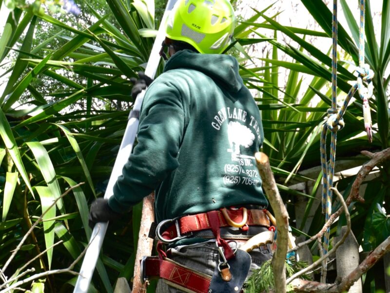
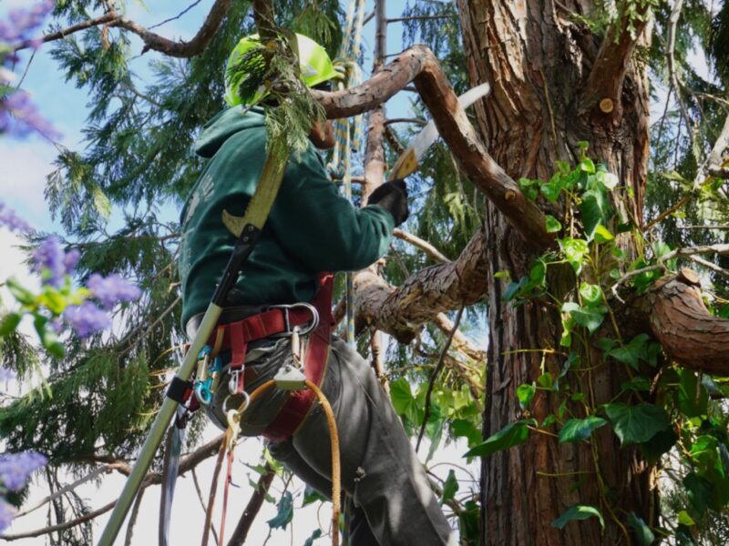

Tree Removal
For dead, leaning, crowded, damaged, or unwanted trees near yards, driveways, fences, and structures.
- Site access and drop-zone planning
- Sectional removal when space is tight
- Debris handling and cleanup options
Services
Green Lane Tree Services handles tree removal, pruning, crown reduction, stump grinding, hazardous trees, and job-site cleanup for Brentwood, Contra Costa County, and Alameda County properties.

What Green Lane Handles
Each job starts with the same questions: what needs to come down, what can be preserved, what access is available, and how the property should look when the cleanup is done.
For dead, leaning, crowded, damaged, or unwanted trees near yards, driveways, fences, and structures.
For trees that need safer clearance, cleaner structure, better shape, or less overhang.
For managing height, weight, and spread when a tree needs control without full removal.
For clearing old stumps after removals so the area can be walked, replanted, or maintained.
For cracked, storm-damaged, leaning, split, or structurally questionable trees that need attention.
For customers who want useful material kept onsite or the full job site cleared before the crew leaves.
Job Planning
Tree-service customers need to know whether the crew handles their exact problem, how debris will be managed, and whether the property will be left clean. Green Lane can make those expectations clear before the work begins.


Service Area
Estimate
Customers can describe the tree, attach photos later by text or email, and get the appointment process started without hunting through the site.